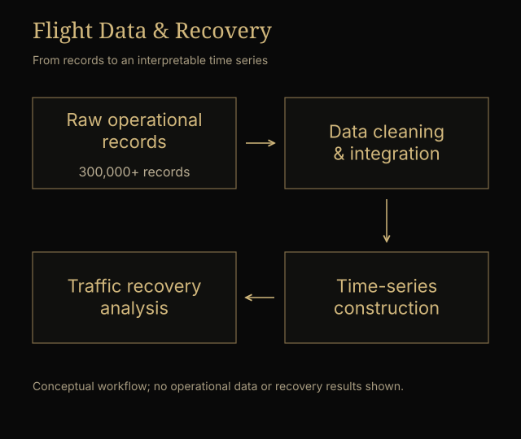
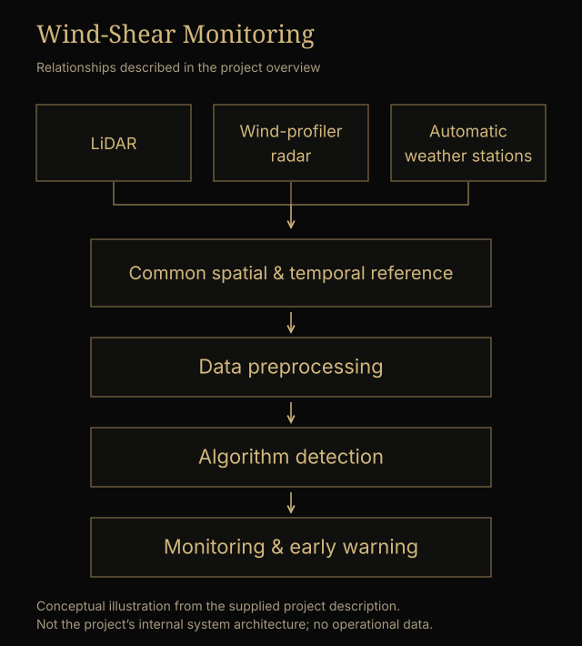
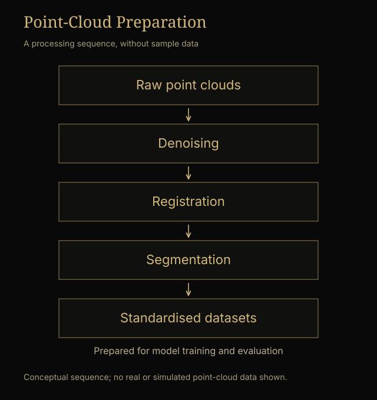
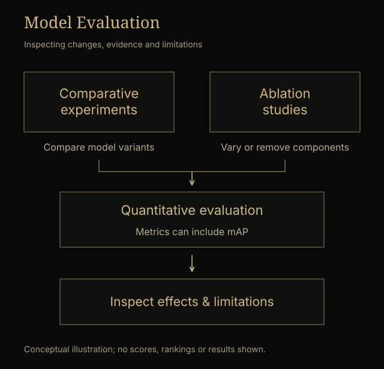

My aviation research began with operational flight data and later expanded into the preparation and evaluation of data for an artificial intelligence-based wind-shear monitoring system. Although the two projects addressed different problems, both required me to think carefully about the relationship between mathematical models and the real systems they are intended to describe. A dataset may contain hundreds of thousands of observations, yet before drawing conclusions from it, someone has to determine what those observations actually represent, how they relate to one another, and whether the information being fed into an analysis is reliable. In aviation, errors in data interpretation can matter well beyond the appearance of a graph. Flight delays, diversions, changing weather conditions, and decisions made under uncertainty all have consequences for passengers, airports, airlines, and flight safety.
Flight Data and Post-Pandemic Recovery | 2023–2025
During 2023–2025, I participated in a research project examining operational flight data from Yinchuan Hedong International Airport, with particular attention to the recovery of air traffic following changes in COVID-related policies. My work involved cleaning and integrating datasets containing more than 300,000 flight records, organizing the information into usable time series, and preparing visualizations that allowed changes in flight activity to be examined over time. We were interested in patterns of recovery that could not necessarily be captured by assuming a constant growth rate or a simple return to pre-disruption conditions.
The project made me think differently about the idea of recovery. An increase in the number of flights is not necessarily the same thing as a uniform restoration of the system that existed before a disruption. Traffic may return at different rates during different periods, and an apparent trend may reflect several influences operating simultaneously. Time-series visualizations helped us examine changes in activity and identify patterns worthy of further investigation, including possible nonlinear behavior. But interpreting those patterns required care: a change occurring after a policy adjustment does not, on its own, establish that the policy caused it. I became interested in how statistical descriptions of recovery could be separated from causal explanations, and how the limits of the available data should shape the conclusions we draw.
This was also one of my early experiences with research in which the less visible work was often the most important. Cleaning records, checking consistency, integrating data from different sources, and deciding how to present the resulting series were necessary before more ambitious analysis could begin. A visualization could look convincing even when the underlying dataset was poorly prepared. I learned to treat the construction of a dataset as part of the research itself rather than as a mechanical step before the real analysis.

AI-Based Wind-Shear Monitoring and Early Warning | 2024–2025
My subsequent work concerned low-level wind shear, a phenomenon involving rapid changes in wind speed or direction that can pose serious risks to aircraft, especially during takeoff and landing. Sudden variations in wind conditions near an airport runway can force pilots to go around, return to their departure airport, or divert to another destination. Beyond the immediate safety implications, such events can disrupt airport operations and impose substantial economic costs. Detecting potentially hazardous changes in the wind field early enough to support operational decisions is therefore both a technical and a practical problem.
I participated as a high school student in Research on Key Technologies for AI-Based Wind-Shear Monitoring and Early Warning (基于人工智能技术的风切变监测与预警关键技术研究), a project under the 2023 Key Research and Development Program of Ningxia Hui Autonomous Region, supported by CNY 500,000 in dedicated research funding from the Ningxia Department of Science and Technology. The research team developed an integrated approach to low-level wind-shear detection and early warning, combining information from LiDAR, wind-profiler radar, automatic weather stations, and other relevant data sources within a unified spatial and temporal framework. The objective was to collect and analyze wind-field information around airport runways and use machine-learning methods to identify patterns associated with hazardous wind conditions.
The team's work included YOLO-based image recognition and Transformer-based approaches to detecting wind-shear features in three-dimensional LiDAR point-cloud data. According to the project's technical description, the research used laser Doppler wind LiDAR data collected during 2023 and 2024 to construct a low-level wind-shear dataset for airports in Ningxia. The model development also involved a self-attention module identified as SATA, a resolution-embedding module (RE) intended to improve the representation of low-resolution point-cloud regions, CoordConv convolutional layers designed to increase sensitivity to spatial position, and a Convolutional Block Attention Module (CBAM) intended to strengthen the extraction of relevant features. These methods formed part of the research team's wider algorithm-development work; they should not be presented as architectures independently invented or developed by me.

My own responsibilities centered on dataset construction, preprocessing, algorithm evaluation, and scientific visualization. Under the guidance of graduate researchers and research staff, I learned to use Python to write scripts for denoising, registration, and segmentation of raw LiDAR point clouds. These steps helped transform raw measurements into more consistent, standardized datasets suitable for model training and evaluation. Working with point-cloud data required attention to the geometry and quality of the observations, not simply their quantity. Before a model can identify meaningful spatial patterns, its input data must be processed in ways that preserve the information relevant to the task.

I also wrote automated evaluation scripts and contributed to comparative experiments and ablation studies. The purpose of these experiments was to examine how changes in the model or its components affected detection performance. We used quantitative metrics, including mean Average Precision (mAP), to help compare model outputs and assess optimization effects. I was interested in the distinction between reporting an improvement and demonstrating that an improvement was attributable to a particular change. An ablation experiment can be useful precisely because it removes or alters a component and tests what happens to the results. At the same time, a higher value for a detection metric does not by itself establish that a system is ready for operational deployment. The test data, evaluation conditions, and possible failure cases all matter.
For the project's technical reports, I used Origin to prepare visualizations from intermediate experimental results and final test outputs. This involved arranging charts, standardizing axis labels and scales, adjusting layouts and color schemes, and producing consistent figures suitable for reporting and comparison. I came to see scientific visualization as another form of analytical responsibility. A chart should make the evidence easier to inspect, not disguise uncertainty or exaggerate the difference between experimental results.

The project developed an intelligent low-level wind-shear detection prototype integrating data acquisition and neural-network-based analysis. The planned research tasks have been completed, and the project has passed acceptance review by the responsible authority. This status refers to the project as a whole. My contribution was a defined part of a larger research effort involving experienced researchers and technical specialists.
Looking back at these two aviation projects, I see a connection between work that initially appeared quite different. In the flight-recovery study, I helped prepare and examine large operational datasets to understand how an aviation system changed over time. In the wind-shear project, I helped prepare three-dimensional sensing data and evaluate algorithms intended to detect a potential safety hazard. One concerned the interpretation of past changes; the other concerned identifying conditions that might require timely action. Both made me more aware of the distance between a mathematical result and a decision made in the real world. A model is useful only to the extent that its assumptions, data, and limitations are understood. That is one reason I want to continue studying mathematics while working on problems involving uncertainty, public infrastructure, and the consequences of technical decisions.